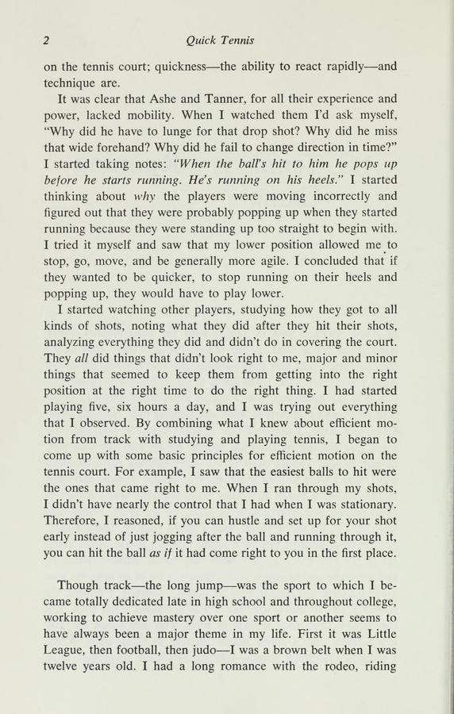

1. Lời Mở Đầu Của Arthur Ashe: Cuộc Cách Mạng Về Bộ Chân
Lần đầu tiên tôi gặp Henry Hines là vài năm trước tại Tokyo, khi tôi và Roscoe Tanner quyết định tới xem một giải thi đấu điền kinh chuyên nghiệp. Chúng tôi lúc đó đang thi đấu một giải quần vợt cách sân vận động điền kinh chỉ chừng 200 mét. Là một cựu sinh viên Đại học UCLA, tôi luôn theo dõi sát sao những ngôi sao điền kinh của vùng Nam California, do đó cái tên Henry Hines – nhà vô địch nhảy xa cự ly đỉnh cao của NCAA – không hề xa lạ với tôi. Tại nhà thi đấu, Henry nhận ra chúng tôi ở hành lang và mời chúng tôi bước lên đường chạy.
Cách anh ấy bước lên đó khiến chúng tôi sững sờ. Đứng bên ngoài rào chắn, anh ấy chỉ cần nhún nhẹ một bước và bật người bay bổng nhẹ nhàng qua hàng rào cao hơn một mét rưỡi như một cánh chim, tiếp đất không hề phát ra một tiếng động nhỏ. Sau đó, Henry quan sát chúng tôi và nói một câu làm thay đổi vĩnh viễn tư duy thi đấu của tôi: "Các anh có kỹ thuật vung vợt rất hoàn hảo, nhưng các anh di chuyển trên sân thì quá tệ."
Chưa từng có một ai dám nói với chúng tôi những lời thẳng thắn như thế. Nhưng sau khi tận mắt chứng kiến một vận động viên điền kinh thế giới di chuyển thanh thoát và bùng nổ đến mức nào, chúng tôi không thể phủ nhận nhận xét đó. Vào cuối năm đó, để chuẩn bị cho mùa giải 1975, nhóm tay vợt người Mỹ chúng tôi đã mời Henry bay tới Puerto Rico để huấn luyện thể lực và bộ chân.
Anh ấy đã bắt chúng tôi tập luyện đến mức kiệt sức suốt bốn ngày ròng rã. Nhưng khi những cơn đau nhức cơ bắp qua đi, tất cả chúng tôi đều đạt tới trạng thái thể lực phi thường chưa từng thấy. Chúng tôi thấu hiểu sâu sắc cách làm thế nào để đôi chân lướt đi trên sân một cách hiệu quả nhất, tiết kiệm năng lượng nhất mà vẫn đạt tốc độ cực đại tới từng quả bóng. Năm 1975 ấy, tôi đã bước lên đỉnh cao vinh quang bằng việc giành chức vô địch giải đấu danh giá nhất thế giới tại Wimbledon. Cuốn sách này kết tinh toàn bộ hệ thống huấn luyện di chuyển mà Henry đã trao cho chúng tôi.
Trong quần vợt hiện đại, tay vợt nào cũng có thể học cách vung vợt đẹp mắt khi đứng yên một chỗ. Tuy nhiên, sự khác biệt giữa nhà vô địch Grand Slam và một người chơi trung bình nằm ở chỗ: ai đưa được cơ thể vào vị trí hoàn hảo sớm hơn nửa giây trước khi tiếp xúc bóng. Bộ chân là nền móng của mọi cú đánh uy lực.

Hình 1.2: Chu kỳ di chuyển trong quần vợt gồm tăng tốc cự ly ngắn (acceleration), hãm đà (deceleration) và thiết lập bệ phóng thăng bằng trước khi vung vợt.2. Bản Chất: Quần Vợt Là Môn Thể Thao Của Đôi Chân (A Running Game)
Hầu hết các huấn luyện viên truyền thống dành tới 90% thời lượng để chỉnh sửa góc mở mặt vợt, cách cầm cán vợt hay đường vòng cung dẫn vợt. Điều đó không sai, nhưng hoàn toàn đảo lộn thứ tự ưu tiên cơ sinh học. Một cú đánh thuận tay (forehand) hay trái tay (backhand) dù hoàn hảo đến đâu trong bài tập ném bóng tại chỗ cũng sẽ vỡ vụn khi bạn phải chạy hết tốc lực sang hai góc sân.
Quần vợt không phải là một môn chạy đường trường với nhịp bước đều đặn. Quần vợt là sự tập hợp của hàng trăm đợt bứt tốc cự ly cực ngắn (từ 2 đến 6 mét), xen kẽ bởi những pha phanh hãm đột ngột, đổi hướng trọng tâm và phục hồi vị trí ngay lập tức. Nếu đôi chân của bạn chậm trễ chỉ 0.2 giây, điểm tiếp xúc bóng sẽ bị trôi ra phía sau thân người, buộc cổ tay và cánh tay phải gồng cứng để bù đắp, dẫn tới sai hỏng kỹ thuật và chấn thương.
3. Khởi Động Động Học: Đánh Thức Hệ Thần Kinh Cơ Bắp
Nhiều người chơi phong trào bước ra sân và bắt đầu bằng các động tác ép dẻo tĩnh (static stretching) như cúi gập người giữ yên 30 giây. Khoa học vận động hiện đại chứng minh rằng ép dẻo tĩnh trước khi vận động cường độ cao làm giảm sức bật bùng nổ của sợi cơ và tăng nguy cơ rách cơ.
Quy trình khởi động động học (dynamic warm-up) chuẩn điền kinh của Henry Hines được thiết kế để kích hoạt các khớp xương chủ chốt:
- Chạy nâng cao đùi nhẹ nhàng kết hợp xoay khớp háng (Hip circles): Giải phóng áp lực vùng chậu và tăng biên độ xoay thân trên.
- Bước gập gối kéo giãn động (Walking lunges with torso twist): Kích hoạt cơ đùi trước (quadriceps), cơ mông (glutes) và nhóm cơ lõi (core muscles).
- Bật nhảy nhịp điệu trên mũi bàn chân (Ankle hops): Đánh thức gân Achilles và hệ thần kinh phản xạ nhanh ở mắt cá chân.
- Chạy bước ngang vắt chéo (Carioca / Grapevine): Kéo giãn cơ khép đùi (adductors) và chuẩn bị cho các pha đổi hướng cắt ngang sân đấu.
Chỉ khi cơ thể đã toát một lớp mồ hôi mỏng và nhịp tim được nâng lên ngưỡng kích hoạt, đôi chân mới sẵn sàng thực hiện những bước di chuyển bùng nổ mà không sợ quá tải cơ bắp.